نبذة تعريفية
رجل أعمال أردني، مواليد موسكو عام 1982، حصل على درجة الدكتوراه في تكنولوجيا النقل البحري من الأكاديمية العربية للعلوم والتكنولوجيا والنقل البحري بتقدير امتياز. يتقن العربية والإنجليزية، وملم بالروسية واليونانية والتركية، يشغل منصب المدير التنفيذي لشركة الأورواسيوية للملاحة البحرية، وعضو مجلس إدارة في عدد من الشركات والوكالات البحرية. وهو شخصية طموحة ومثابرة، عُرف بحبه للعمل وإيمانه العميق بقيمة الاجتهاد كطريق لتحقيق النجاح. لا يتردد في خوض التحديات، يعمل دائماً تحت مبدأ "المجازفة من أجل الهدف"، واضعاً نصب عينيه الرؤية الواضحة والنتائج الملموسة. جمع بين الفكر العملي وروح الريادة، مما جعله نموذجاً يُحتذى به في الإصرار والطموح.
رؤية الدكتور زيد شاكر أبو حمور في تطوير النقل البحري
يرى الدكتور زيد شاكر أبو حمور أن قطاع الملاحة والنقل البحري هو عصب حيوي في الاقتصاد العالمي ومحرك رئيسي للتجارة الدولية. يؤمن بأهمية تطوير هذا القطاع من خلال الابتكار وتوظيف التكنولوجيا الحديثة لتحسين الكفاءة وتقليل التكاليف. كما يولي اهتماماً خاصاً بتأهيل الكفاءات البشرية ورفع مستوى التدريب البحري، معتبراً أن الاستثمار في العنصر البشري لا يقل أهمية عن الاستثمار في البنية التحتية.
يرى أيضاً أن الرقمنة والتحول الذكي في إدارة سلاسل الإمداد البحرية هو المستقبل، مشيراً إلى أهمية إدخال أنظمة الملاحة الذكية، وتحليل البيانات، وتقنيات الذكاء الاصطناعي لتعزيز الكفاءة والشفافية في العمليات البحرية. كما يؤكد على ضرورة مواءمة البنية التشريعية والبيئية مع المعايير الدولية لضمان سلامة الملاحة وحماية البيئة البحرية.
من خلال عمله وخبرته، يسعى الدكتور زيد إلى بناء بيئة بحرية متقدمة تواكب المتغيرات العالمية، وتضع الأردن والمنطقة في موقع تنافسي في قطاع النقل البحري العالمي.
المسيرة المهنية
يشغل حالياً منصب المدير التنفيذي لشركة الأورواسيوية، وعضو مجلس إدارة في شركات ووكالات بحرية. يتميز بشخصيته الطموحة ونهجه القيادي المبني على "المجازفة من أجل الهدف".
المسؤولية المجتمعية
ساهم في دعم مؤسسات رياضية وتعليمية وخيرية محلياً، ويحرص على خدمة المجتمع كجزء من رؤيته القيادية المتكاملة. ويتمتع الدكتور زيد بعلاقة قوية ومبنية على الاحترام والوفاء بوالديه وأهله، ويُعرف ببرّه العميق بهم واعتزازه بجذوره العائلية التي تشكل جزءاً أساسياً من شخصيته وقيمه.
الأبحاث والإنجازات
له أبحاث منشورة في مجال النقل البحري وتكنولوجيا سلاسل الإمداد، وساهم في تطوير تطبيقات عملية في إدارة الموانئ والتحول الرقمي البحري.
المراجع:
- بحث علمي: المجلة العلمية للدراسات التجارية والبيئية
- بحث علمي: الأكاديمية العربية للعلوم والتكنولوجيا والنقل البحري
- بحث علمي: The impact of COVID-19 on the bulk market
- ملف PDF: The impact of COVID-19 on the bulk market in the Mediterranean
- ملف PDF: The impact of COVID-19 on the bulk market in the Mediterranean – Dr. Zaid Shaker Abuhamour
المقالات:
- تكنولوجيا النقل البحري – مستقبل ذكي ومستدام للموانئ وسلاسل الإمداد.
- دور الابتكار الرقمي والقيادة الاستراتيجية في تطوير قطاع النقل البحري في منطقة البحر المتوسط.
- الأثر الاقتصادي والتحولات التشغيلية في النقل البحري الذكي.
- المحيطات والبحار– مدخل إلى العالم الأزرق.
- نقطة نيمو- الموقع، التسمية، الأهمية
- الملاحة البحرية – التعريف، الأنواع، التقنيات والتحديات.
- المضائق والممرات البحرية حول العالم
- الاقتصاد الأزرق- التعريف، المبادئ، الاستراتيجية.
- مقابلة: مجلة رجال الأعمال (عدد 50 – أيلول 2014 – الأردن)
معرض الصور
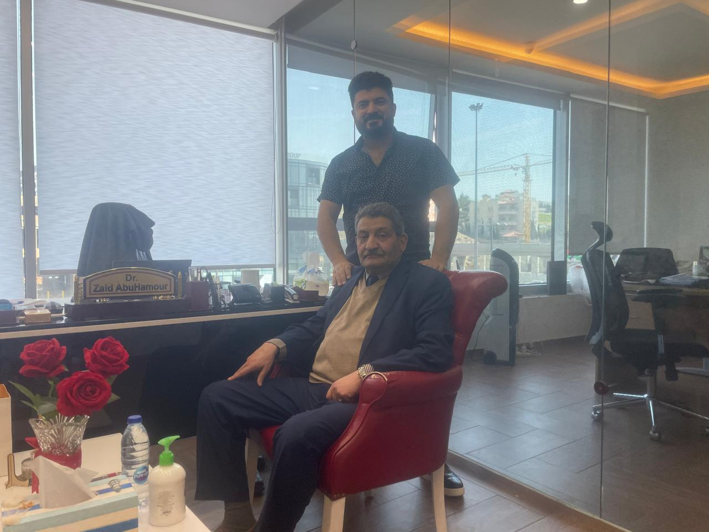
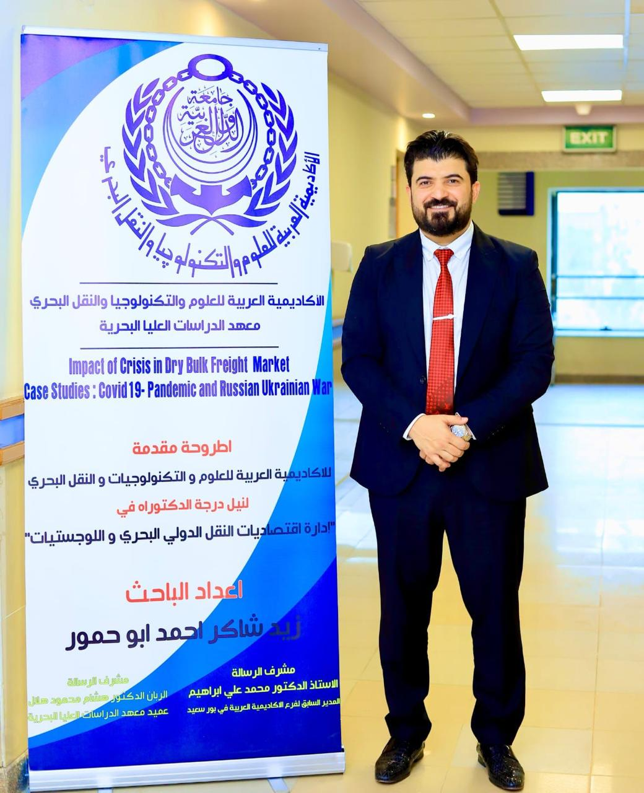
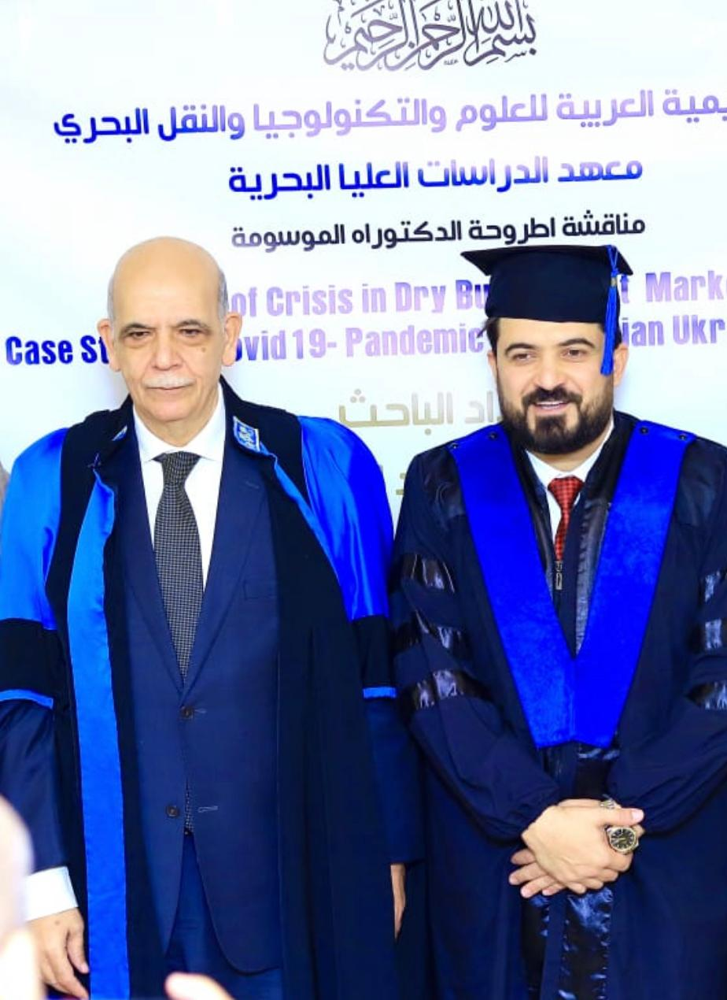
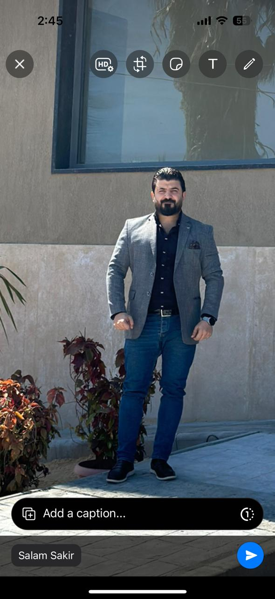
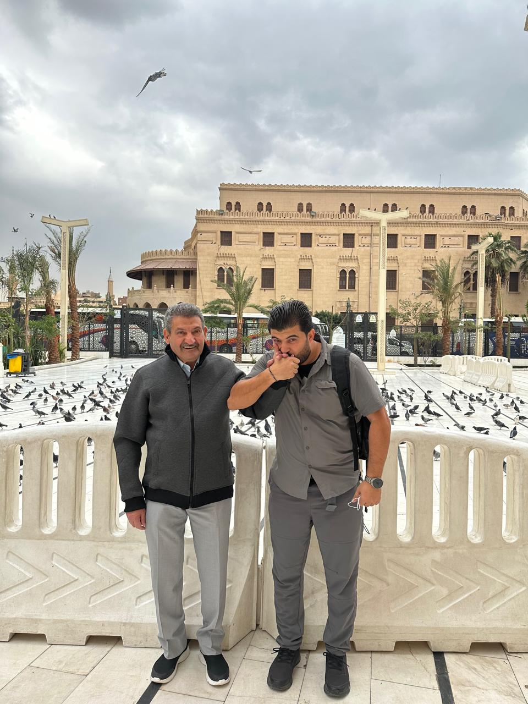
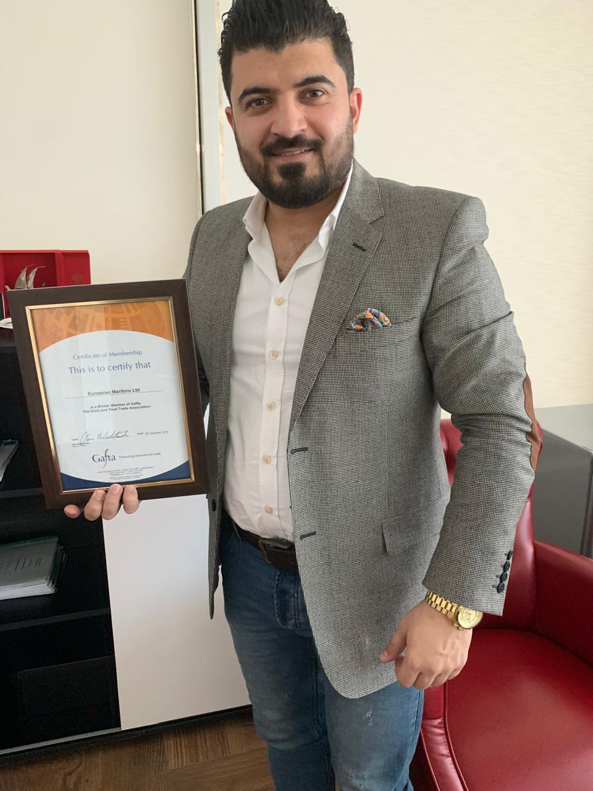
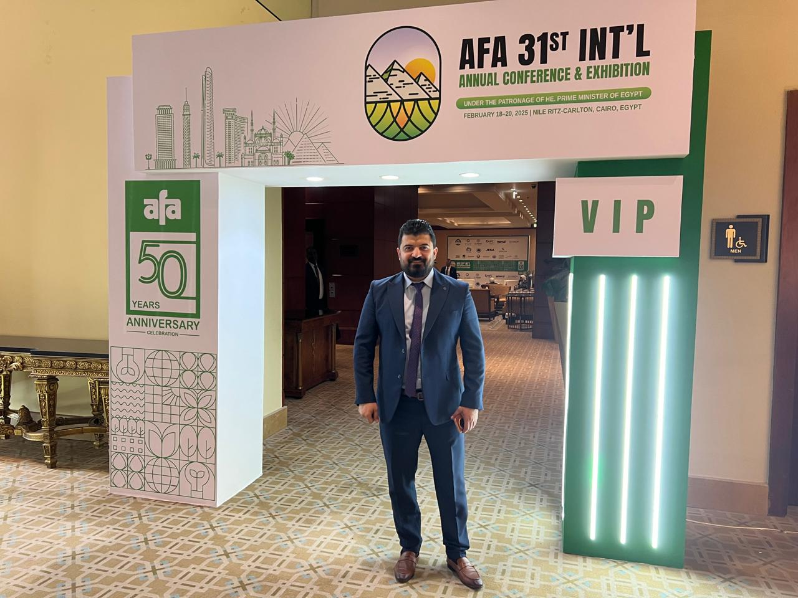
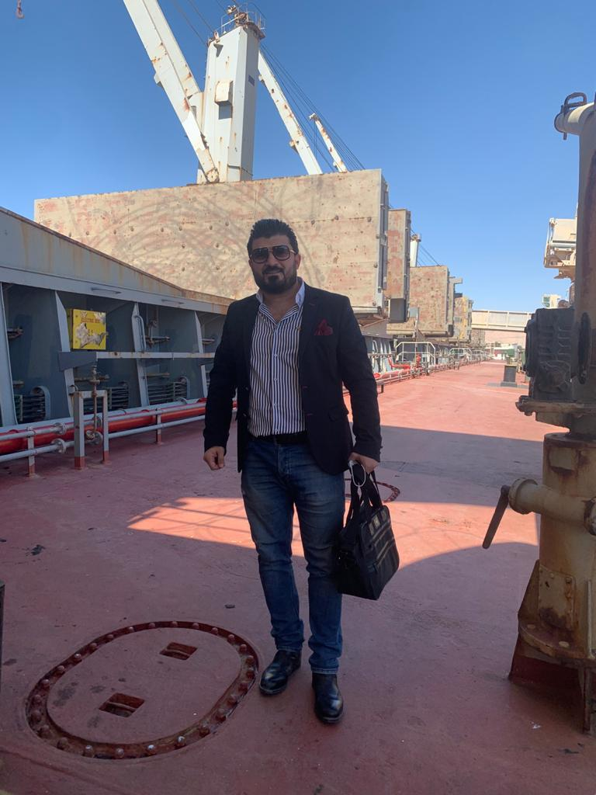
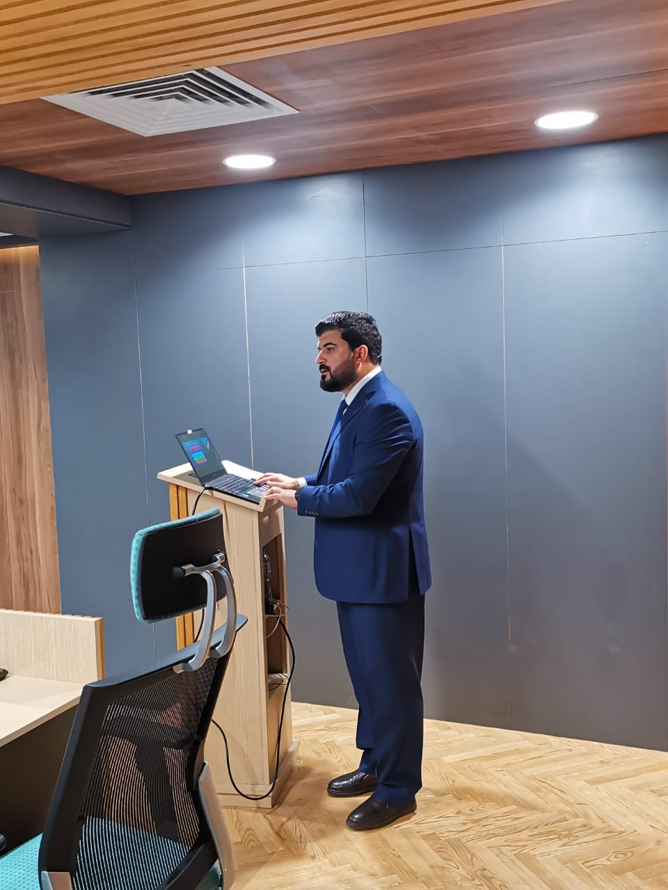
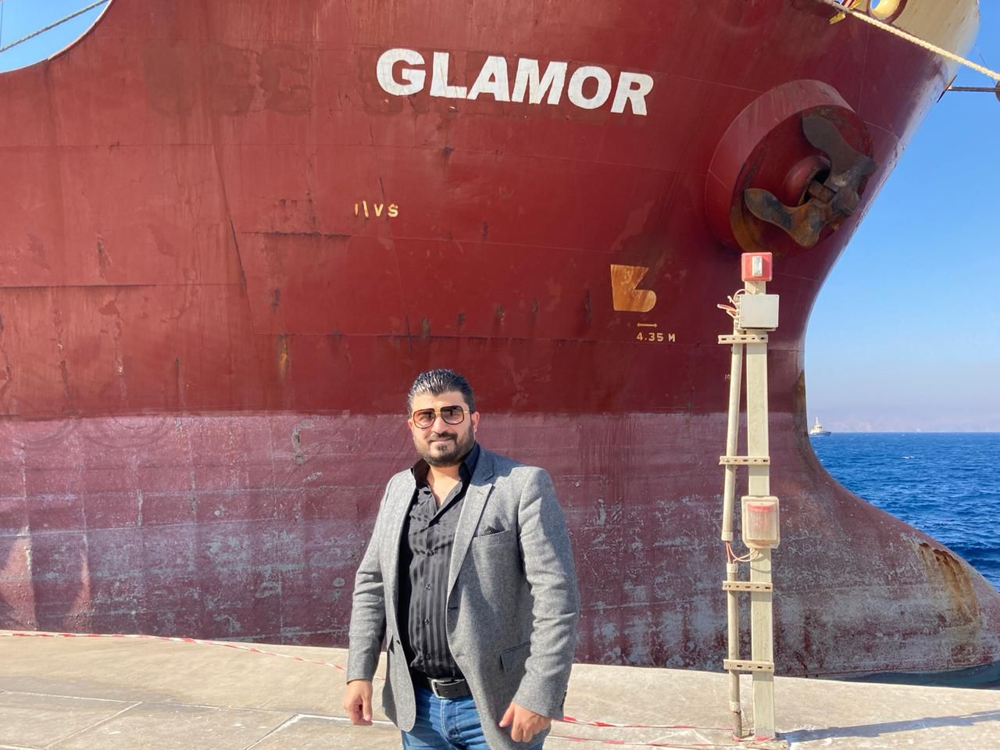
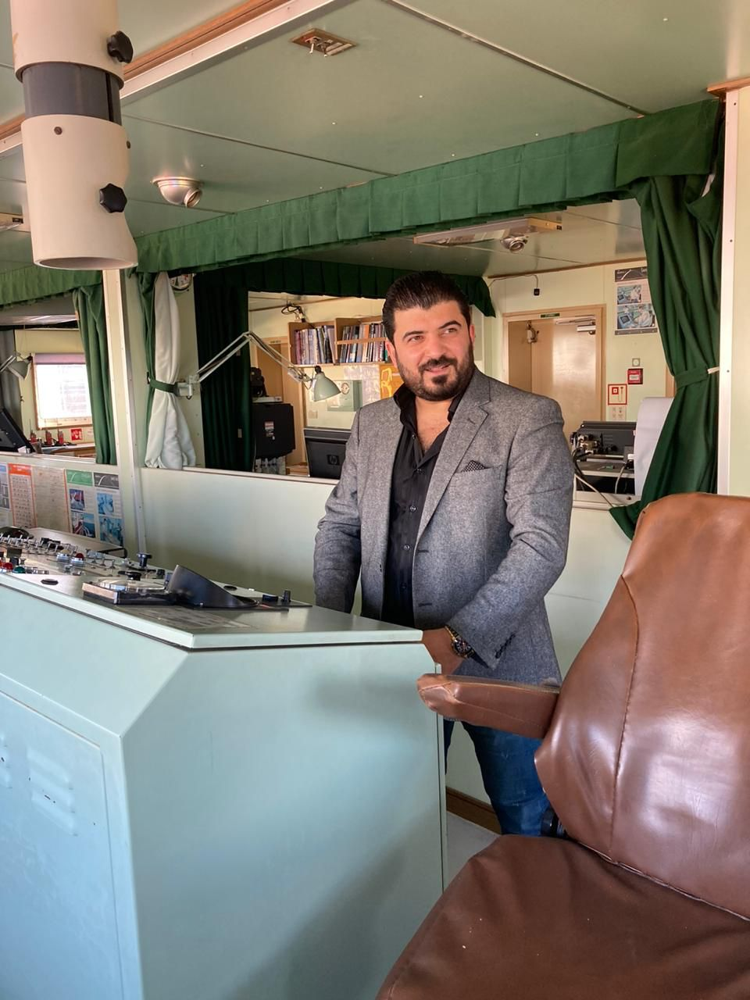
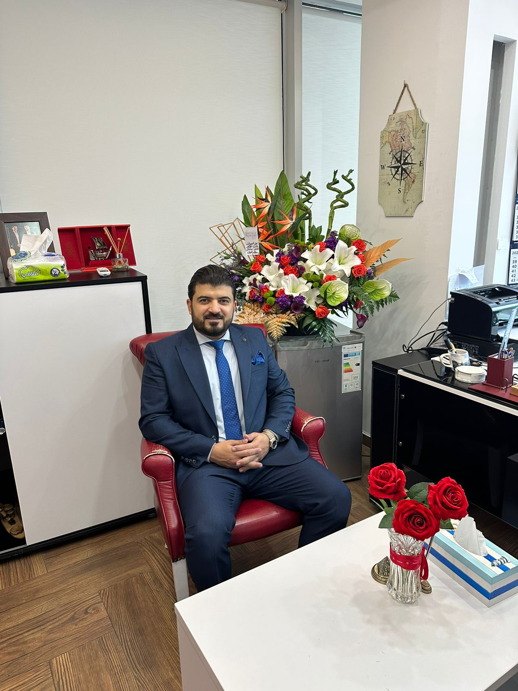
Euro Asian Maritime LTD.Co.